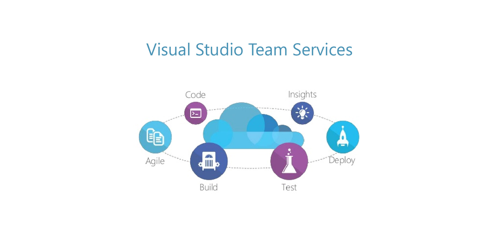
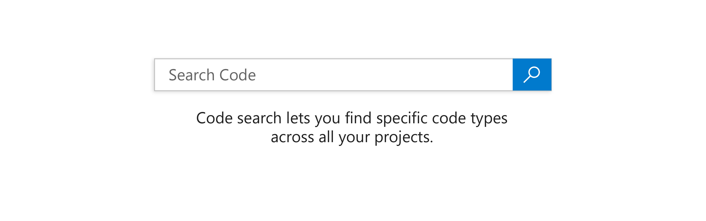
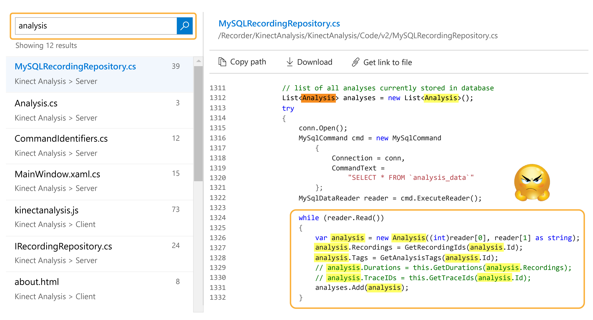
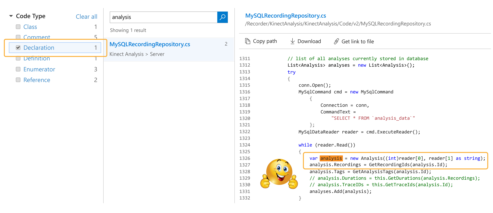
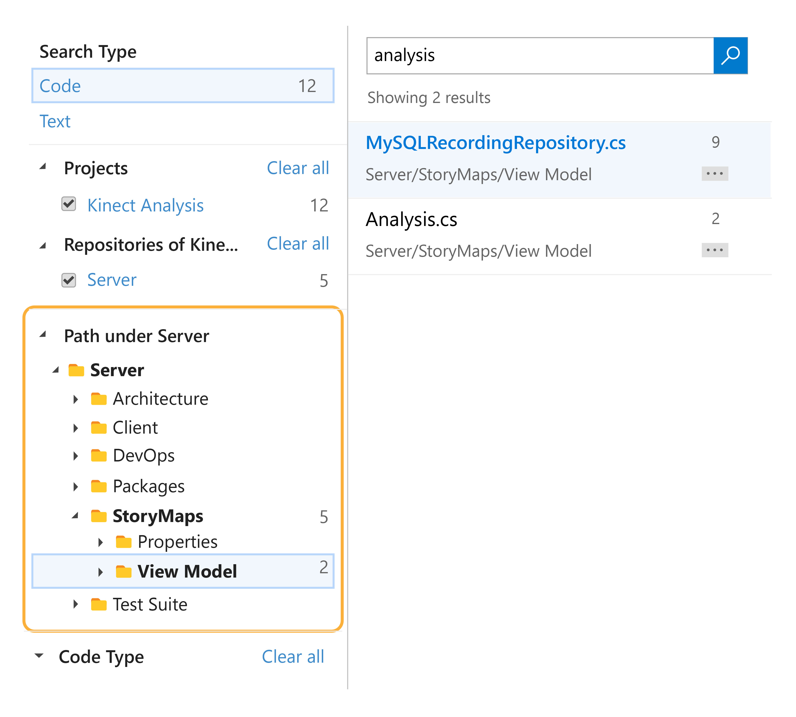
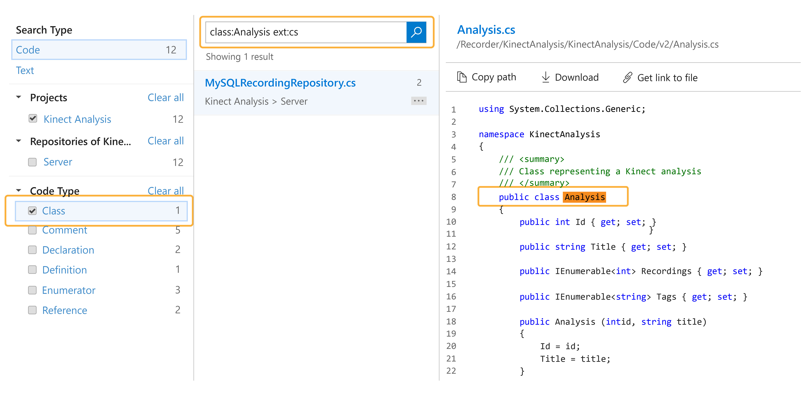

Microsoft Visual Studio - Developer Productivity Tools
Role
Product Research and Development
Team
Visual Studio Code Search
Client
Microsoft
Timeline
Mar 2014 - Jul 2015
Problem
Visual Studio Team Services is a part of Agile Developer Productivity tools that help teams effectively collaborate and manage their code. As a team's codebase expands, spawning across multiple projects and repositories, browsing code becomes increasingly difficult. A regular text search is inefficient and insufficient at this scale. This called for the need of a much stronger and domain specific searching mechanism.
Solution
Semantic Code Search is the one-stop solution to facilitate code exploration and troubleshooting needs. It provides fast and accurate search across the entire code.
What is Visual Studio Team Services?
The Visual Studio Team Services is a Developer Productivity Package that provides engineers all the tools needed at various stages of product development. It helps you setup a git-based version control system, perform code review, continuous integration, testing, deployment and reporting.
In simple words, it makes an engineer's life simpler by integrating all these requirements into a single product.

What is Code Search?
As a team's codebase expands, spawning across multiple projects and repositories, browsing code becomes increasingly difficult. A regular text search is inefficient and insufficient at this scale. This called for the need of a much stronger and domain specific searching mechanism.
Imagine trying to find the perfect pair of earphones on Amazon without being able to sort or apply filters!
Code Search is an advanced searching tool that has powerful capabilities to narrow down search results to the exact code instance that the user desires. It does that through a combination of relevance ranking and code filters. So with Code Search, a user can find the exact file that contains the definition for a class called "Analysis", quickly. She can also expand her search to find references of that class, or find other projects where the same class is being used.

Having this type of searching capabilities helps users quickly get to what they are looking for and avoid wasting time wading through irrelevant results.
Code Search Design Decisions
We conducted background on existing search tools, github search and some internal tools used in Microsoft. We also conducted ethnographic research with some users, hovering over them in their cubicle as they went about their day. Finally, we spoke with some user in 1:1 interviews about their workflow and the bottlenecks they experience during in their work. This formed the basis for our design decisions.
CODE SEARCH IS INTELLIGENT.
It's not just any search tool. It understands the code like it was written. It supports code type filters that engineers use day in and day out. Imagine you're a user trying to find a declaration for the class "Analysis" in your codebase. Without code search, you could easily run into a situation like this:

This was a common problem faced across teams. It consumed a lot of time and efforts that could have been used elsewhere. It's also such a tedious process to navigate code, it slowed down the users and affected their productivity.
"Navigating code is such a pain. Plus you don't know if you will actually find what you want."
Now with the code filters within code search, you can eliminate irrelevant results and quickly get to the file that contains the class declaration.

CODE SEARCH IMPROVES CROSS COLLABORATION.
There is so much cross-collaboration within teams these days, it's unlikely that users will only work within their own code. Eventually, they will venture into unfamiliar code.
When we talked to users about how they make themselves familiar with unknown code, we found a similar pattern followed by most users. They navigate the code to understand the structure and create a mental map of that code. Intelligent IDEs make it easy to find references and dependencies. Standard naming conventions are additionally helpful in connecting the dots. Thereafter it's free exploration based on educated guesses until they are comfortable with the code.
"Searching in an unfamiliar code can be quite daunting, especially when you don't know where to look."
With this knowledge, we incorporated a navigation system within Code Search to encourage exploration. While it's impossible to know someone else's code as well as your own code, with easy navigation and powerful search, a user can start to understand the structure and find their way.
With Code Search, a user can scope down a search result to a project. Once she is within the context of that project, Code Search provides the internal file structure to help her explore that codebase. While she's is navigating through the internal structure, the search results on the right are automatically updated to inform her if the given path contains any hits.

The response to this was quite positive and this feature ended up being super helpful to new members of a team, helping them ramp up and get familiar with the code they will soon be working on.
CODE SEARCH IS FOR BOTH, THE MOUSE AND THE KEYBOARD.
One of the user studies we conducted was an ethnographic research, in a cubicle! We wanted to observe how they code and how they use the tools at their disposal. We made some very peculiar observations.
1. We observed a significantly large usage of keyboard. Typing provided a swiftness that pointing,
clicking and dragging couldn't.
2. A lot of the users had the most commonly used shortcut commands memorized so that they could minimize the mouse usage.
3. In a post test briefing one of the users mentioned that even though he saves maybe a second per command, over the
entire day it's repeated so much that he ends up saving a lot of time.
"Using a mouse or trackpad is equivalent to driving down a freeway at 70mph, only to find that some idiot decided to put speed bumps on the freeway."
Eventually our goal was to improve user's productivity. We didn't want the "type" of interaction to hamper their speed or discourage them from using it. Thus we came up with the idea of query filters. These are essentially the same code filters as above, but now the user can just type them into the search query itself.
The filters will be applied to the results during the execution of the search.

Launch and Impact
We launched Code Search to teams across Microsoft. It was an opt-in feature and within the first month we had over 500 teams opt into Code Search. That's thousands of users and million lines of code.
We also had an open channel for feedback and it came pouring in. Most popularly to support more languages and enable search across multiple git branches. This entire experience strengthened my interest in product research and design and I completed my switch from an engineer to a full-time product person!
Sign up for a free visual studio account and check out Code Search!